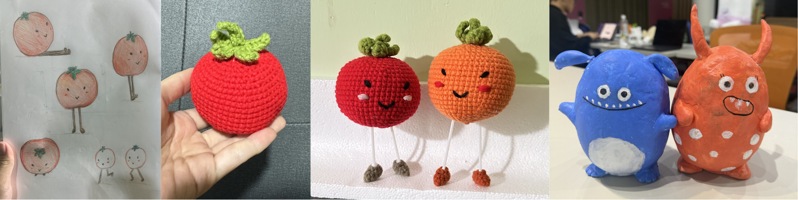
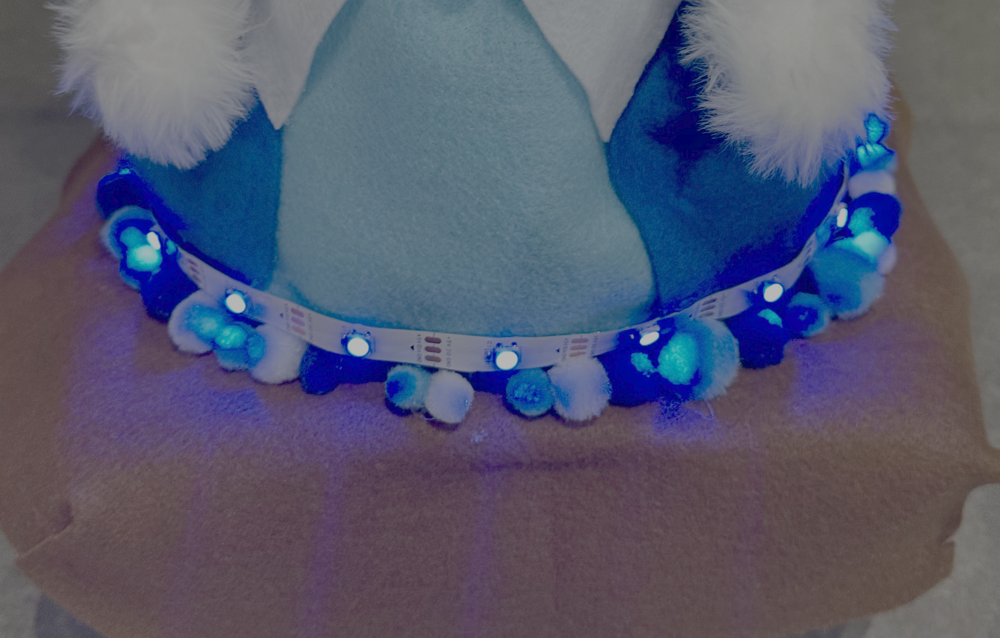
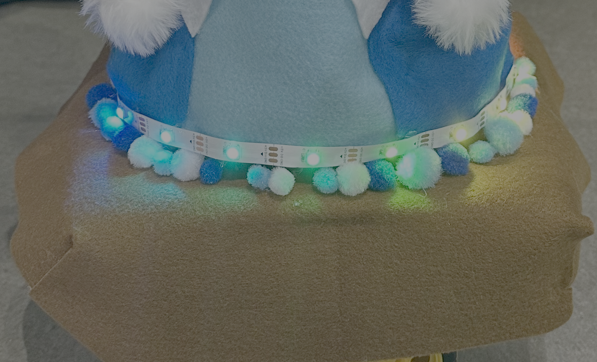

Boreum
An Arduino-powered idol robot that autonomously performs on stage through programmed movement, music, and character-driven interaction.

Watch Boreum perform
Bridging the gap between cold machinery and emotional expression through choreographic design.
Our goal is to transform rigid hardware components into an expressive, emotional character.
We aim to create an idol-like performing robot that moves in sync with music, seamlessly synchronizing lighting, sound, and servomotor movements to mimic the captivating energy of a live performance.
Before arriving at the final design, we explored various shapes and character personas through rapid sketching and physical mockups.
Iterating the character

During the early phases, we brainstormed different forms and built prototypes to test how different proportions affected the perceived "personality" of the robot.
Even though these early concepts didn't make it to the final build, they were crucial in helping us understand the importance of curves, scale, and balance in character design.
The birth of Boreum
After experimenting with various proportions, we converged on a rabbit-inspired design for Boreum. Its soft curves and distinct posture create an inherently friendly and idol-like presence.


Bringing lyrics to life
To deliver a true idol performance, we choreographed the robot's motion to reflect the song's rhythmic changes, utilizing dynamic spins and directional movements to match the beat.
Drawing inspiration from the lyrics, "glowin'" and "That's who we're born to be", we designed lighting sequences that visually amplify the emotional with the song.


A single Arduino board drives both the lighting and the motion, sequencing them into one designated performance.
Hardware Architecture
Prototyping the kinetic foundation and ensuring structural stability for dynamic movements.
Sensory Integration
Mapping sound triggers to lighting states to create a cohesive, multi-sensory experience.
Character Crafting
Designing a soft, appealing exterior to bridge the gap between machine and performer.
Interaction Tuning
Fine-tuning the timing of the robot's spins and directional movements so they align perfectly with the song's rhythm.
Ready to see it all come together?
Re-watch Performance